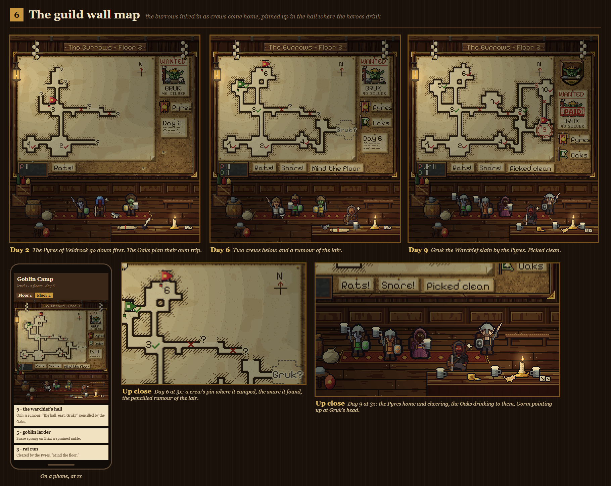
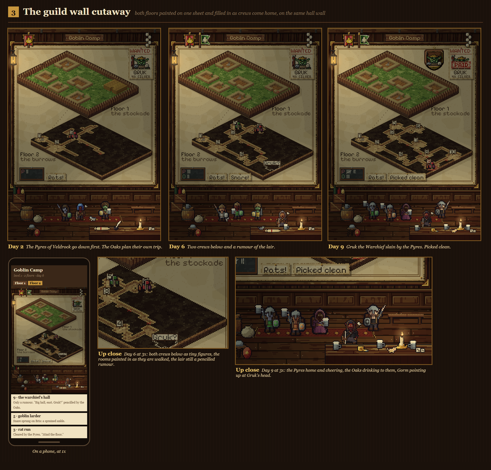
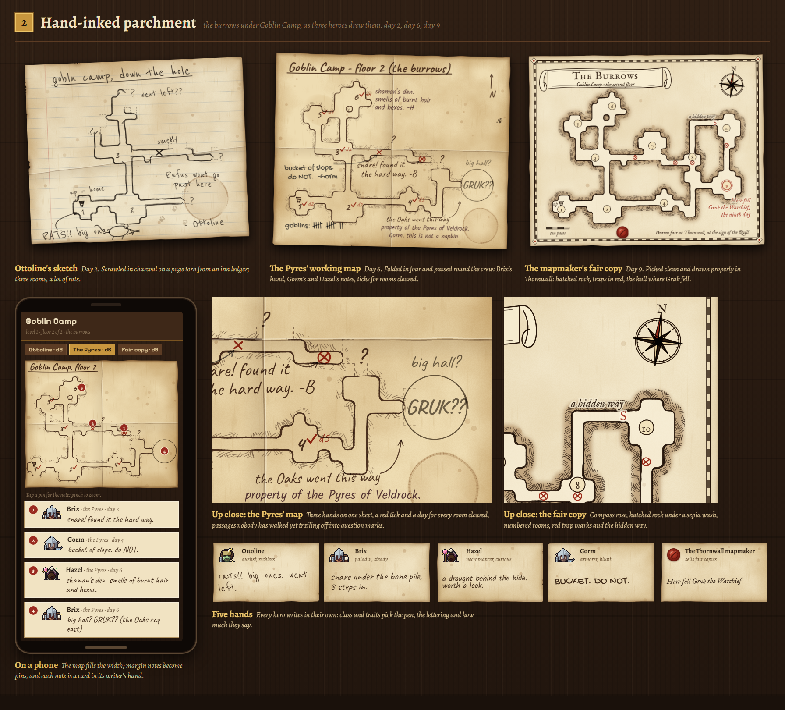
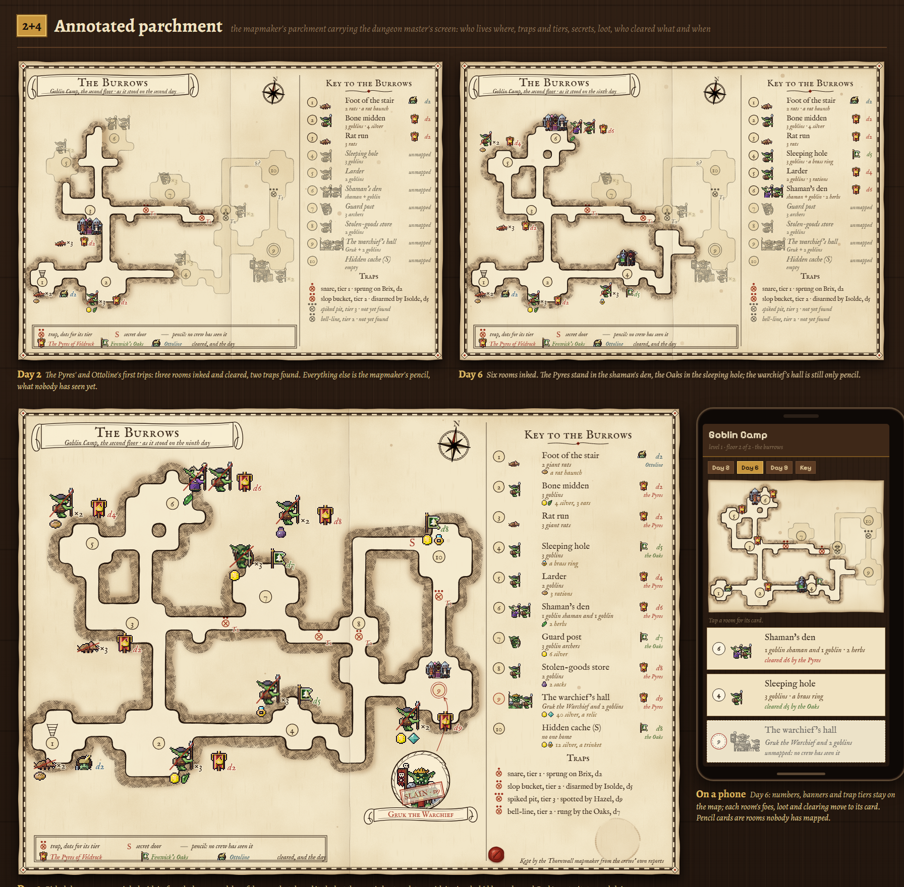

The four directions picked from the first round, drawn in more detail. Each sheet shows the same dungeon (the burrows under Goblin Camp) on days 2, 6 and 9 of a league, plus how it looks on a phone.

6. The guild wall map — the burrows inked on a board in the hall where the heroes drink

3. The guild wall cutaway — both floors painted as an isometric model on the same wall

2. Hand-inked parchment — the maps the heroes draw themselves, from a scrawled sketch to the mapmaker's fair copy

2+4. Annotated parchment — the fair copy with the full key: who lives where, traps, loot, and who cleared what and when